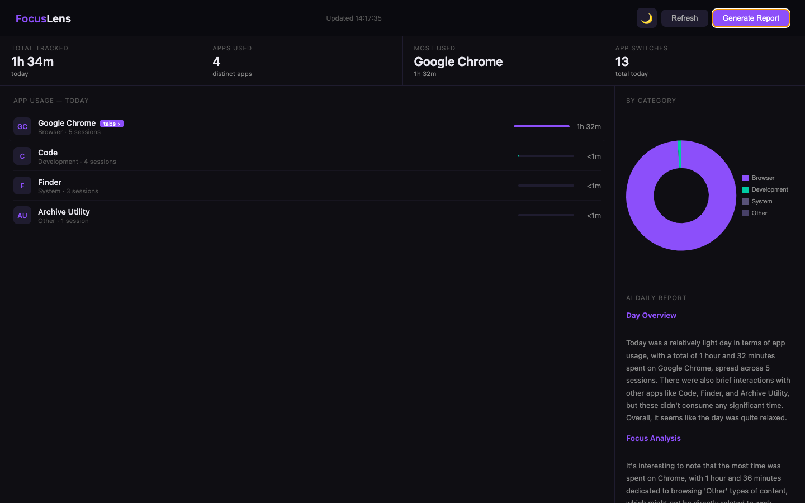
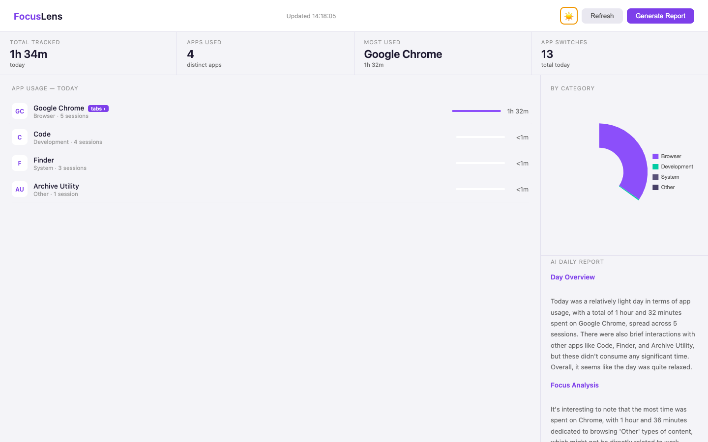
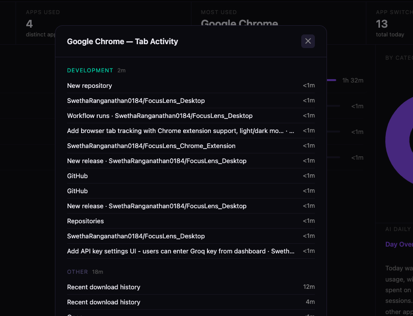

FocusTrace tracks every app, every browser tab, and every meeting distraction — then turns it into an AI-powered daily report.
Free forever · No account needed · Runs locally on your device

Everything you need
See it in action


Simple setup
Free to download. No account. No subscription. Just honest data about how you spend your day.